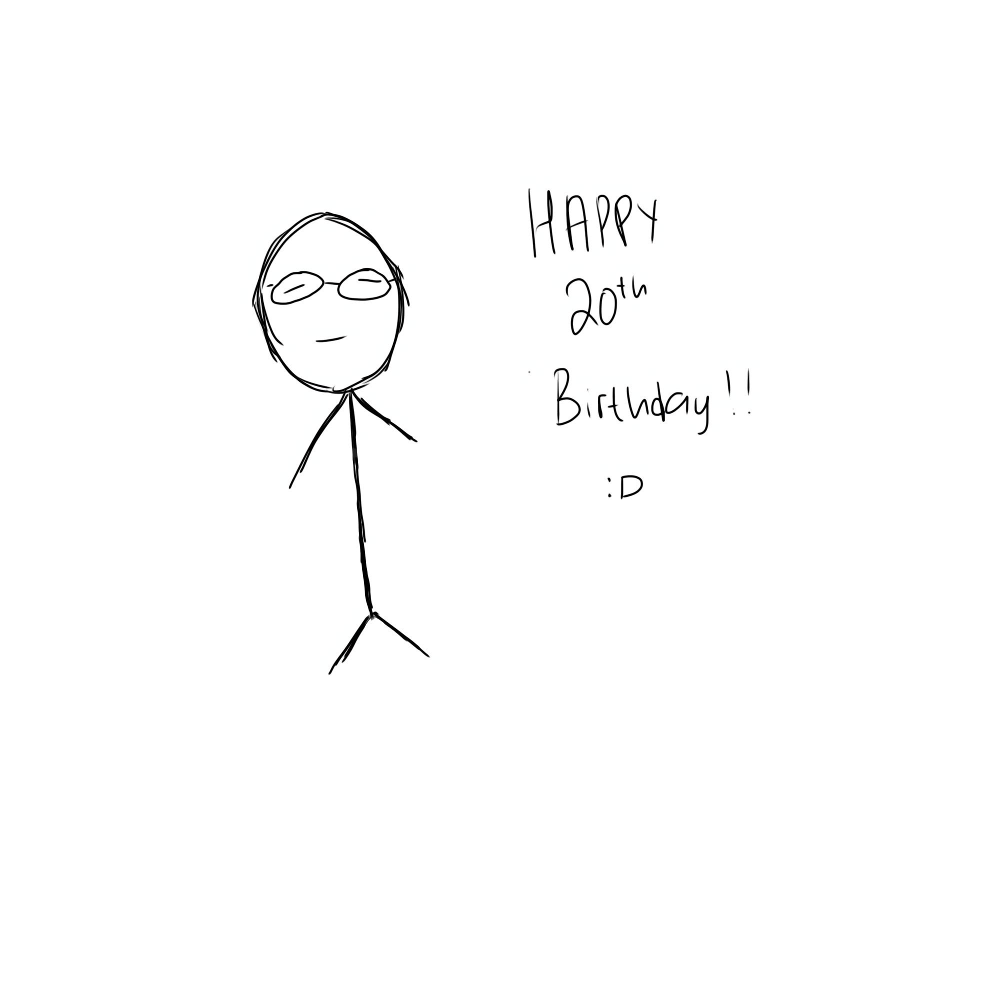

i made something for you
Letter
Photo
Dear (insert name here),
(no I’m not using AI, I genuinely don’t know what to call you 🧍)
Do pardon me if the website looks bad. I made it in a hurry (masih gaptek… cough cough) Anyways.
Happy birthday! We’ve known each other for about 2 years now dan aku gapernah sempet ngucapin selamat ulang tahun sama sekali WKWKWK. Ya, even though you forgot my birthday (💔), take this as a little gift as compensation.
I know it’s not much, but arm erm urm (bingung mau ngomong apa)… urgrhrhur udah lama bgt ga nulis longtext ke siapapun (mules). OOT tapi tadi aku malah mau ngecover tp takut diketawain lolsies </3
Sooo, first off, I’m glad to have met you in my life. Idek where to start because i sound corny as hell DUH MAAF BGT THIS IS SOO CRINGY sobsob. Urmrmrm I’m not here to apologize because we’re past that phase I hope… I guess sekalian mau nulis doa? Even though I’m not super religious, aku kadang tetep berdoa kalo kamu selalu baik-baik aja.
I hope you’re well loved, I hope you keep on doing what you love, I hope you’re always happy, all that and more. Aku yakin hidup itu naik turun, but at the very least, I hope you’ll always muster up the strength to wake up for another day.
I believe you’ll do great in life. I’d still love to hear more from you. Life updates, apapun itu, if you don’t mind. Although if you want to maintain boundaries, or someone else of importance to you is bothered by my presence, then I completely understand as well. Truly, I really admire you as a person from the bottom of my heart.
HAHAH… maaf yah… kalau ga sesuai…. karena these are the things I remember about you & I don’t even know whether you still like some of these stuffs or not. Huffttt semoga bisa dicerna. Kalo engga ya wallahualam.,,,, 🫂 Ngga usah dijawab kalo kamu ga nyaman. Happy (late) birthday, ya!
